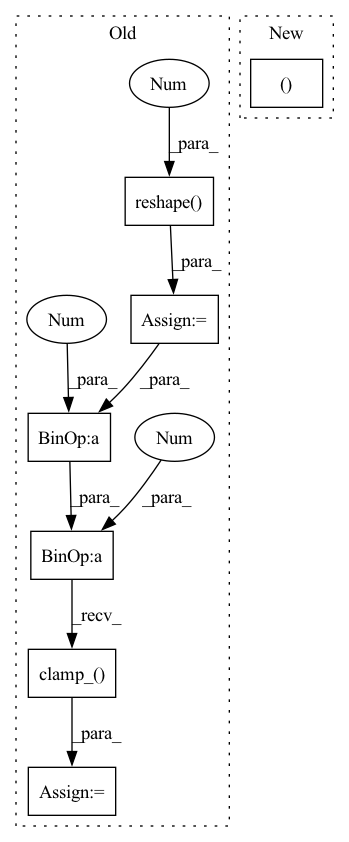

Pattern ID :7078

Before Change
if pred.shape[-3] != 3 or target.shape[-3] != 3:
raise ValueError("LPIPS needs 3-channel images with the channels at dim -3")
pred = pred.reshape(-1, *pred.shape[-3:]) // [..., 3, h, w]
target = target.reshape(-1, *target.shape[-3:]) // [..., 3, h, w]
pred = ((pred + 1) / 2).clamp_(min=0.0, max=1.0) // range: [0., 1.]
target = ((target + 1) / 2).clamp_(min=0.0, max=1.0) // range: [0., 1.]
return 1.0 - self.criterion(pred, target)
@classmethod
After Change
def forward(self, pred, target):
if pred.shape[2] != 3 or target.shape[2] != 3:
raise ValueError(f"{self.NAME} needs 3-channel images with the channels at dim 2")
pred, target = self.reshape_clamp(pred, target)
return 1.0 - self.criterion(pred, target)
@classmethod
In pattern: SUPERPATTERN
Frequency: 3
Non-data size: 7
Instances
Fragment ID: 23634312
Project Name: ais-bonn/vp-suite
Commit Name: 4b7d4c54cdaa9147f544bc843a9d471c611c875f
Time: 2022-02-22
Author: boltres@ais.uni-bonn.de
File Name: vp_suite/measure/image_wise.py
M Class Name: SSIM
N Class Name: SSIM
M Method Name: forward(3)
N Method Name: forward(3)
M Parent Class: BaseMeasure
N Parent Class: BaseMeasure
M File Name: vp_suite/measure/image_wise.py
N File Name: vp_suite/measure/image_wise.py
M Start Line: 118
M End Line: 123
N Start Line: 100
N End Line: 102
'>
Before Change
if pred.shape[-3] != 3 or target.shape[-3] != 3:
raise ValueError("LPIPS needs 3-channel images with the channels at dim -3")
pred = pred.reshape(-1, *pred.shape[-3:]) // [..., 3, h, w]
target = target.reshape(-1, *target.shape[-3:]) // [..., 3, h, w]
pred = ((pred + 1) / 2).clamp_(min=0.0, max=1.0) // range: [0., 1.]
target = ((target + 1) / 2).clamp_(min=0.0, max=1.0) // range: [0., 1.]
return self.criterion(pred, target) // scalar
After Change
def forward(self, pred, target):
if pred.shape[2] != 3 or target.shape[2] != 3:
raise ValueError(f"{self.NAME} needs 3-channel images with the channels at dim 2")
pred, target = self.reshape_clamp(pred, target)
return self.criterion(pred, target)
'>
Fragment ID: 23634313
Project Name: ais-bonn/vp-suite
Commit Name: 4b7d4c54cdaa9147f544bc843a9d471c611c875f
Time: 2022-02-22
Author: boltres@ais.uni-bonn.de
File Name: vp_suite/measure/image_wise.py
M Class Name: LPIPS
N Class Name: LPIPS
M Method Name: forward(3)
N Method Name: forward(3)
M Parent Class: BaseMeasure
N Parent Class: BaseMeasure
M File Name: vp_suite/measure/image_wise.py
N File Name: vp_suite/measure/image_wise.py
M Start Line: 95
M End Line: 100
N Start Line: 80
N End Line: 82
'>
Before Change
def forward(self, pred, target):
if pred.ndim == 5:
pred = pred.reshape(-1, *pred.shape[2:]) // [b*t, ...]
if target.ndim == 5:
target = target.reshape(-1, *target.shape[2:]) // [b*t, ...]
pred = ((pred + 1) / 2).clamp_(min=0.0, max=1.0) // range: [0., 1.]
target = ((target + 1) / 2).clamp_(min=0.0, max=1.0) // range: [0., 1.]
return -self.criterion(pred, target)
After Change
self.criterion = piqa.psnr.PSNR().to(device)
def forward(self, pred, target):
pred, target = self.reshape_clamp(pred, target)
return -self.criterion(pred, target)
@classmethod
'>
Fragment ID: 23634314
Project Name: ais-bonn/vp-suite
Commit Name: 4b7d4c54cdaa9147f544bc843a9d471c611c875f
Time: 2022-02-22
Author: boltres@ais.uni-bonn.de
File Name: vp_suite/measure/image_wise.py
M Class Name: PSNR
N Class Name: PSNR
M Method Name: forward(3)
N Method Name: forward(3)
M Parent Class: BaseMeasure
N Parent Class: BaseMeasure
M File Name: vp_suite/measure/image_wise.py
N File Name: vp_suite/measure/image_wise.py
M Start Line: 70
M End Line: 75
N Start Line: 60
N End Line: 60